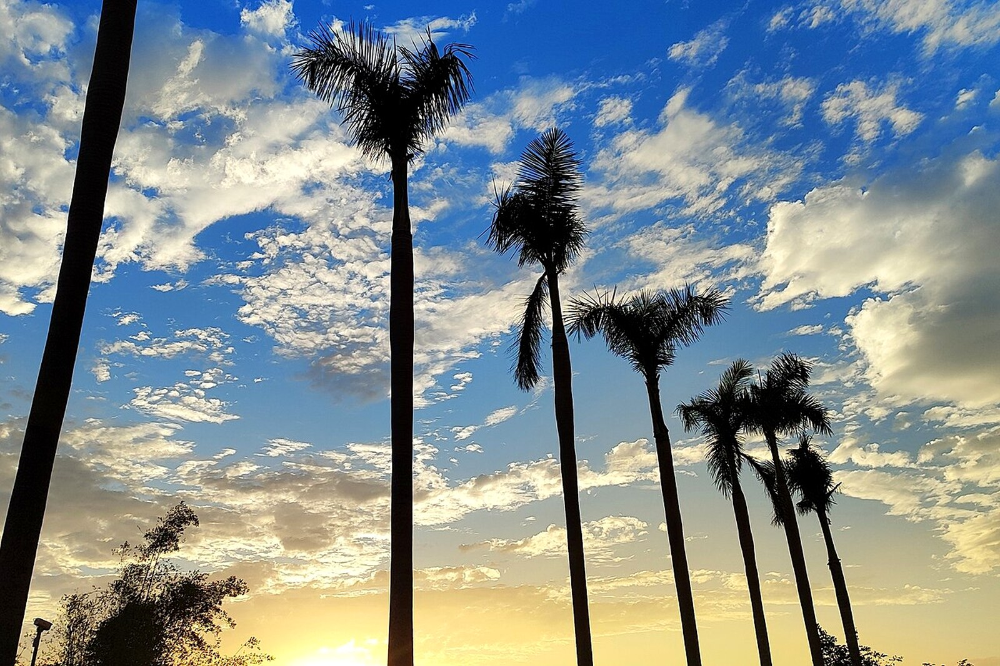

风光、人文、海边人像和机车照片计划
视觉主线
不要把 7 天拍成同一种“蓝海＋站立人像”。建议形成三组：
- 东线蓝色速度：风车、冲浪、沿海公路、摩托动态。
- 南线热带人像：蜈支洲、后海、亚龙湾、酒店光影。
- 海口城市记忆：骑楼、老字号、街头人物和台风后仍熟悉的城市质感。

地点与镜头表
| 地点 | 最佳题材 | 推荐时段 | 镜头/方法 |
|---|---|---|---|
| 海口骑楼 | 街头人文、招牌、骑楼纵深 | 16:30—蓝调 | 35/50mm，先交流再近拍 |
| 木兰湾 | 风车、灯塔方向、摩托与公路 | 日落前 90 分钟 | 70—200 压缩风车，广角交代海岸 |
| 日月湾 | 冲浪动作、海边店铺、机车 | 浪况合适时＋日落 | 1/1000 动作；1/30 追随 |
| 石梅湾/神州半岛 | 椰林、弯道、双人人像 | 16:00 后 | 24—70 主力，低机位但不躺车道 |
| 后海 | 村落生活、冲浪者、夜间氛围 | 清晨或傍晚 | 35mm 环境人像 |
| 蜈支洲 | 海水颜色、白沙、运动相机 | 上午至中午看水色；下午人像 | CPL 适度旋转，防止水面失去高光 |
| 亚龙湾 | 经典热带海湾、大景 | 日落前 | 广角＋长焦层次 |
机车酷照：安全的 6 个镜头
- 静态三分之四前侧：车停在合法停车带，人物扶车看向海面。
- 长焦压缩：摄影者远离车道，用 135—200mm 把风车/椰林压到人物后方。
- 低速追随：在封闭场地或安全支路以 1/30—1/60 秒拍，绝不在主路反复掉头。
- 头盔特写：面罩反射海岸，突出“带自己的头盔”这一旅行符号。
- 停车后的生活照：脱下骑行外套、拿相机、走向沙滩，比纯摆拍更自然。
- 日落剪影：人车都在停车区，避免为了轮廓停在弯道或路中央。
不拍压弯、翘头、无盔、逆行、双手离把或车流中并排行驶。拍摄地合法和安全比“看起来像公路大片”重要。
海边帅照造型
- 白/米色亚麻衬衫＋深色泳裤：适合南线清澈海水。
- 黑色速干上衣或无明显 logo 骑行服＋头盔：适合万宁机车。
- 灰蓝/沙色长袖＋工装短裤：适合陵水礁石与港湾人文。
- 避免荧光色大面积衣服污染海水色彩；可用一件红色外套作为少量视觉锚点。
器材建议
- 机身 1—2 台；主力 24—70，风光 16—35，冲浪/人文远景 70—200。
- CPL、ND、清洁笔、足量镜头布；超广角使用 CPL 时检查天空是否出现深浅不均。
- 每个机身至少 2 块电池；充电宝和锂电池全部随身。
- 防雨罩、5—10L 小干袋、相机内胆包、硅胶干燥剂。
- 每晚执行“双备份”：电脑/移动硬盘一份，第二块硬盘或云端一份；至少在换酒店前完成。
无人机与人文边界
- 每个起飞点重新核对民航无人机管理平台、机场净空、景区规定和现场禁飞标识。
- 文昌航天发射场、机场、港口、军事设施和不明敏感设施附近不飞、不拍。
- 渔民、工人和村民可辨识的近距离肖像先征得同意；拒绝后立即停止。
- 不公布“无人秘境”的精确下水点和脆弱生态位置，避免引流造成破坏。